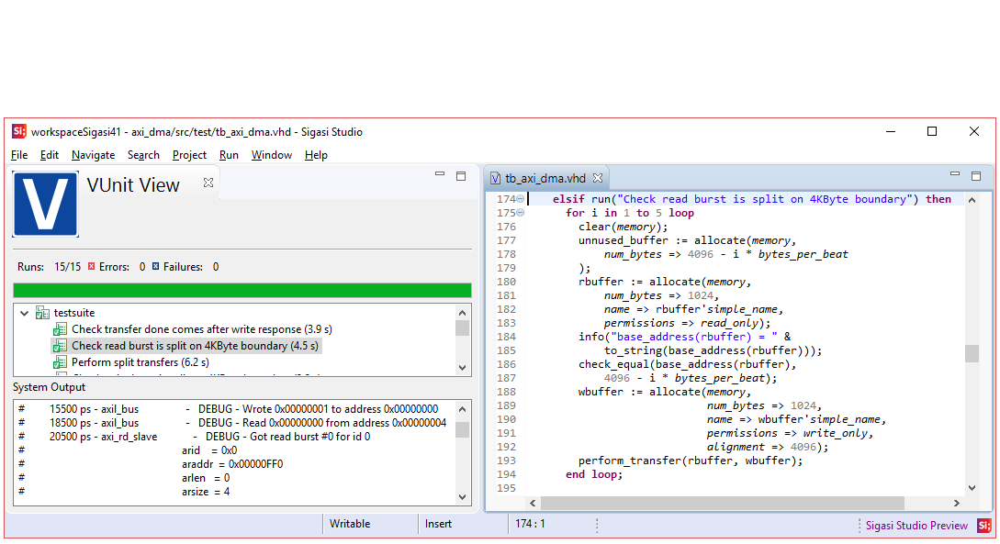
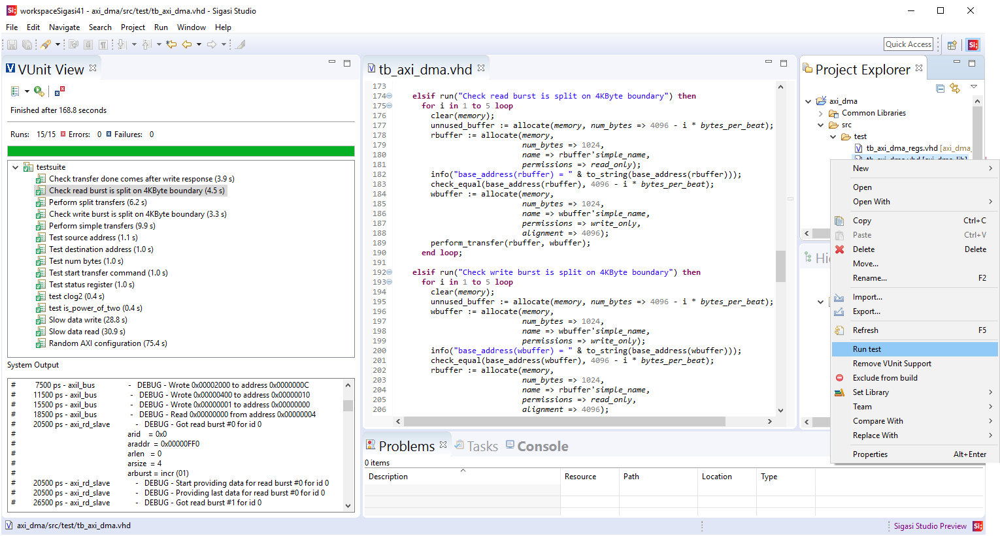
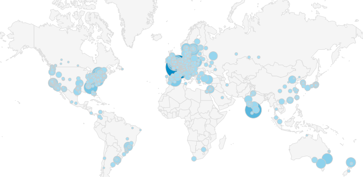
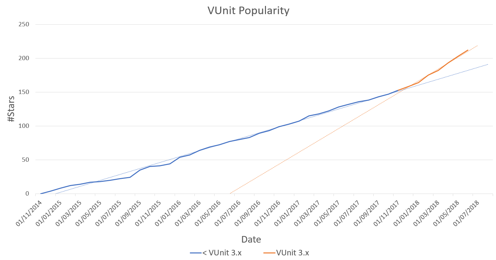
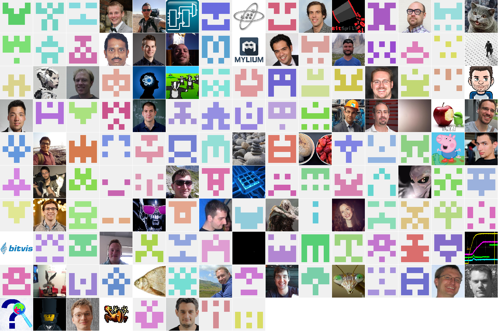
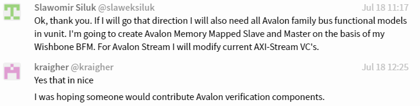

Sigasi Deepens Its Commitment to the VUnit Testing Framework¶
Note
This article was originally posted on LinkedIn where you may find some comments on its contents.

Sigasi started to support the VUnit testing framework when their Sigasi Studio IDE became VUnit-aware in the 3.6 release. That release introduced a feature to conveniently configure the VUnit library for your Sigasi Studio project.
With the upcoming 4.1 release Sigasi takes a leap beyond convenience by adding values that haven’t been available before. VUnit is now integrated such that tests can be executed with a mouse click and verification progress and results can be monitored in a dedicated VUnit view.

VUnit-based development with a Sigasi front-end is now becoming equivalent to how testing is managed in modern software development. This doesn’t dictate your test methodology though. Whether your tests are based on directed, constrained random, file-based or some other form of testing is still up to you. A good example of this is how verification engineers with a UVM background have started to use VUnit to fully automate their test environments.
Sigasi Studio is not the first tool to go beyond convenience support and start building on top of VUnit (see Eksen for an example) but it is the first commercial tool. This follows a line of logical steps I’ve seen over the years where the first wave of VUnit adopters are individuals spread around the world (see below), the second wave are the organizations for which these individuals are working, and the third wave are the tool providers acting to support these organizations.

Each wave typically has three phases. In the first phase VUnit is evaluated and by the end of this phase some independent users will make their findings public by publishing blogs and tweets for example. Some of them will endorse the project by giving it a star and this is probably the best indication that the project is surviving the evaluation phase. The VUnit star trend has been pretty consistent over the last years but it did take a new direction at the time we announced VUnit 3.0 which was a release focusing on BFMs and verification components in general.

The second phase is when people become long-term committed to the tool. Companies make VUnit part of their development methodology, often in combination with a continuous integration server, and VUnit becomes a requested skill when looking for new employees. Universities include VUnit in their courses and their textbooks. Tool providers starts adding convenience support like Sigasi did with the VUnit awareness in Sigasi Studio 3.6 or they bundle VUnit with their tools. Bundling is not something we’ve pursued due to our continuous delivery approach with releases every other week on average. A bundled version will always be outdated so the Sigasi approach of being aware of the VUnit already installed is preferred.
The second phase is also when users start thinking about how VUnit can be tailored for their specific needs and as a result there are a lot of questions in various forums and in our chat. A lot of activities in the user forum and in the feature request area is a sign that there are people in the second phase.
Having a large and active user community is essential to a project like VUnit. It’s the open many-to-many discussions that make sure that the tool stays relevant. Close to 150 users have been active on our website in this way:

The first two phases are basically a free lunch. People use what’s freely available or request that missing features are added. The third phase is when the users start investing time and money to contribute to the VUnit ecosystem. It can be anything from fixing documentation typos to contributing a BFM or something independent like building tools on top of VUnit in the way Sigasi is doing now. A lot of activity in the pull request area is a sign that the project has entered this phase.

Having many users actively and publicly involved in maintaining and expanding the code base is something we highly encourage as it improves the pace and continuity of the project. So far 27 users have contributed to the code.
That’s all for now. If you’re interested in a test drive of Sigasi Studio 4.1 I recommend that you have a look at the early preview which can be downloaded from the Sigasi preview channel. Make sure that you have the latest VUnit version installed. Currently only VHDL is supported but SystemVerilog support is also planned. This is a release in the making so feedback is appreciated. Contact Sigasi directly or use the VUnit chat (Sigasi is monitoring that as well).